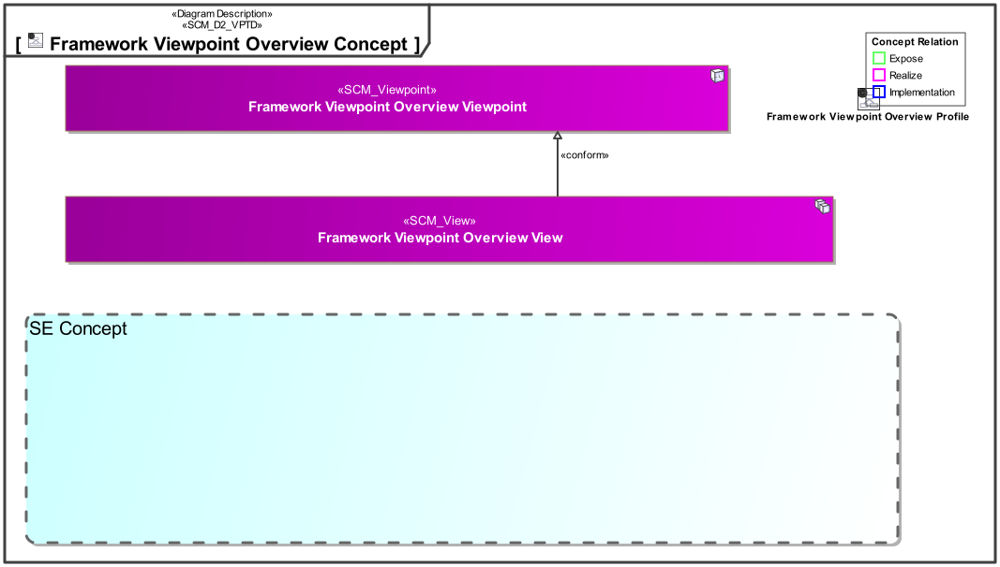
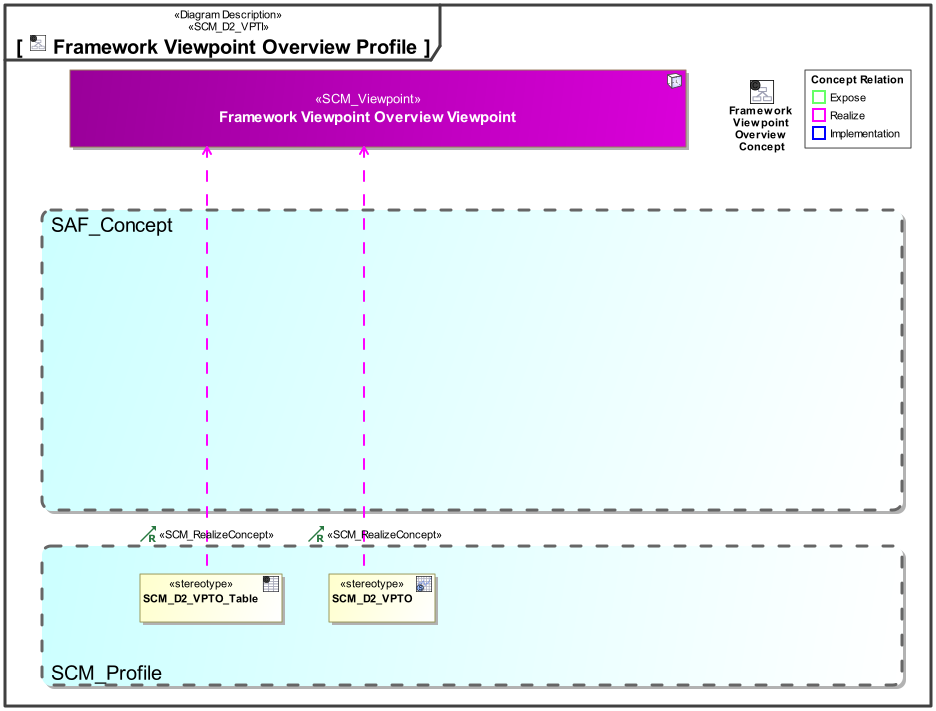

D2_VPTO Framework Viewpoint Overview Viewpoint
| Domain | Aspect | Maturity |
|---|---|---|
| SAF Development | Taxonomy & Structure |
The Framework Viewpoint Overview Viewpoint provides an overview about the Viewpoints in SAF from a SAF Developers perspective. It shall specify
The viewpoint is intended to be used for development or extension of the SAF.
The Viewpoint supports the “Specification of an architecture description framework” as defined in ISO42010:2022
A content diagram featuring a graphical grid representation containing graphical representations of the aspects, domains, and viewpoints available in the framework.
A table featuring the frameworks viewpoints, the domains, aspects, viewpoint implementation diagrams and maturity.
The following Stereotypes / Model Elements are used in the Viewpoint:
The Diagram shows the concepts exposed by the viewpoint, and related concepts if necessary.

| Concept | Documentation |
|---|
The Diagram shows the implementation of exposed concepts.

| Concept | Realization |
|---|